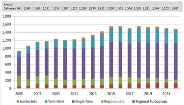
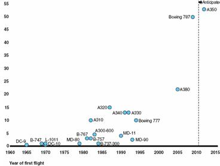
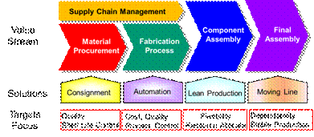
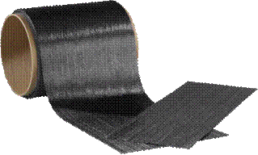
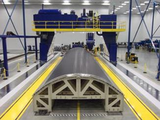
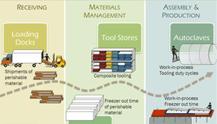
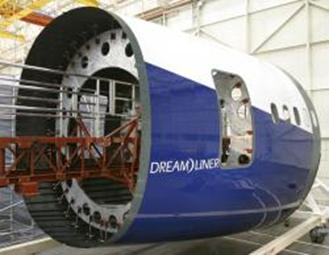

Paper Title :
Competitive Operation Model for the Supply Chain of Aircraft Composite Parts
Abstract
The demand trend of civil aircraft is stable and increasing in the future years. Due to the material technology development and fuel price volatility, the composite materials become more important in aero-structures, also starting to apply in the aero-engine category. It is a good opportunity to integrate the supply chain in the aircraft composite parts and get benefits from well operation. This study propose the Competitive Operation Model, which introduce the concepts of value stream, risk management and lean production into the supply chain processes and management processes for aircraft manufacturers and aero-structures suppliers. Thus the aircraft manufacturers and their suppliers can increase the performance and competence in the competitive market.
Author
Hsien-Ming CHANG
Aerospace MBA
Toulouse Business School
Toulouse, France
Paper Transcript of Paper Titled :
Competitive Operation Model for the Supply Chain of Aircraft Composite Parts
Competitive Operation Model for the Supply Chain of Aircraft Composite Parts
Hsien-Ming CHANG
Aerospace MBA
Toulouse Business School
Toulouse, France
Abstract—The demand trend of civil aircraft is stable and increasing in the future years. Due to the material technology development and fuel price volatility, the composite materials become more important in aero-structures, also starting to apply in the aero-engine category. It is a good opportunity to integrate the supply chain in the aircraft composite parts and get benefits from well operation. This study propose the Competitive Operation Model, which introduce the concepts of value stream, risk management and lean production into the supply chain processes and management processes for aircraft manufacturers and aero-structures suppliers. Thus the aircraft manufacturers and their suppliers can increase the performance and competence in the competitive market.
Key words: aircraft, supply chain, composite parts, Competitive Operation Model.
Introduction
Although the number of new transport aircraft sold in a given year has “whip-sawed” over the past decade, production and deliveries have trended steadily upward. As seen in Figure 1, this trend will continue in the coming decade. Aircraft manufacturers are expected to deliver more than 17,000 aircraft (including dedicated cargo planes) between 2012 and 2022. About 60 percent of these aircraft will replace aging aircraft. [1]

Figure 1 Demand of Transport Aircraft [1]
A recent challenge in aerospace engineering is the trend to switch from predominantly aluminum to predominantly composite structures, as evidenced by the development of the Boeing B787 and the Airbus A350 XWB (Extra Wide Body). From the manufacturing perspective, this is a major step change since it imposes the need to create and update existing knowledge bases to adapt industry to this new demand. [2]
For commercial planes, composites penetration continues in new design as composites are applied to all critical parts. This trend is driven by the positive economic global impact of composites - weight reduction leading to fuel cost savings. [3]
Composite materials used in commercial airplanes typically are produced by combining layers of carbon or glass fibers with epoxy. In recent years, manufacturers have expanded the use of composites to the fuselage and wings because these materials are typically lighter and more resistant to corrosion than are the metallic materials that have traditionally been used in airplanes. The percentage of total structural weight attributed to composites show as Figure 2. [4]
 Figure 2 Commercial Airplane Models over time by Percentage of Composites. [4]
Bombardier’s International Composite Centers of Excellence includes 6 main manufacturing plants with Composite manufacturing facilities for civil aircraft structures. They structure for composites new product development approaches. They focus on the quality of the manufacturing process; enhance the quality of the interfaces and communications with all internal resources; follow a disciplined project management approach; reduce time to market and minimizing engineering changes following design freeze. [5]
The business opportunity for increased use of composites - aero-engine components. The company sees a long-term trend towards lighter engines, featuring lower speed, higher-diameter fans, in order to meet fuel consumption and emissions targets over the coming years. The advantages of carbon fiber epoxy in this context is that it is 66% lighter than titanium, its properties can be tailored to critical load/stiffness directions, and carbon fiber is inherently resistant to fatigue loading. [6]
The demand trend of civil aircraft is stable and increase in the future years. Due to the material technology development and fuel price volatility, the composites material become more important in aero-structures, also starting to apply in the aero-engine. It is the good opportunity to construct a robust and efficient supply chain of composite parts in the aerospace industry.
Competitive Operation Model
Structural airworthiness is the first aspect in airworthiness certification for composite material structure which has particular devisable performance, togetherness of material and structure, multiplicity of potential failure modes and lack of regularity, sensitivity to out-of-plane loads and to operating environment. The items of structural airworthiness regulation are established on above key problems and have close relations with the improved knowledge of safety for aircraft structure. In the period of service life, structure must be designed to bear limit load and meet the rigidity requirement in the appropriate environment, this is not only applied to new structure and also to aging structure. [7]
Due to the following reasons, we have to create the Competitive Operation Model for the supply chain of aircraft composite parts.
- Aerospace industry utilize more composite materials: New design aircraft such as A380, A350, B787, C-Series apply more composite materials in aero-structure. The aero-engine has started to apply composite materials.
- Shelf life constraint is critical to the quality of details parts and components: so reserve and acquire the material in time and keep a suitable/reasonable inventory level for production turn around are essential for the effective supply chain.
- High capital investment in composite: The main facility in composite shop, including clean room, autoclave, auto-layup machine, 5-axis trimming machine, the purchase cost and invest are high.
The procedures of aircraft composite parts include the material procurement, fabrication process, supply chain management, components assembly and final assembly.
This study construct and propose Competitive Operation Model, shows as Figure 3. We describe the material procurement in section 3, explain the fabrication process in section 4, design the supply chain management in section 5, develop the component assembly in section 6, and discuss the final assembly in section 7.

Figure 3 Competitive Operation Model
Material Procurement
The major raw material for composite parts production are prepregs, resin, honeycomb...etc., shows as Figure 4. Those materials have to store inside the temperature control container (e.g. ice box) during the shipment and storage. Even exposure in the room temperature, we have to measure/count and control the shelf life until enter the autoclave and start the curing cycle.

Figure 4 The Raw Material- Prepreg [8]
If the composite production shops are located far away from the raw material supplier, such as emerging area. The material procurement become a critical issue for stable and smooth production.
Target
Due to the most of raw materials are shelf life control, so the target of material procurement is provide the right quantity of material in the right timing to ensure the production quality is qualified and stable.
Focus
The whole process should focus on shelf life control, including:
- Inventory and consuming control.
- Delivery/shipment process control.
- Prepreg group cutting/lay-up and curing.
Solution
The solution of the whole aircraft material procurement should take the following actions:
- The aircraft manufacturer should link with material suppliers in design/develop stage of the new model to select the suitable materials.
- The aircraft manufacturer should forecast his long term demand and secure the continuously supply of raw material from those suppliers.
- Aircraft manufacturer should group the demand of aero-structures suppliers to negotiate and deal with the price with raw material supplier to control the cost and resources.
- The aero-structures suppliers should alliance with raw material supplier and build the consignment inventory near the place of those composite shops to acquire the benefit of shelf life control.
Fabrication Process
The fabrication process include prepreg cutting, lay-up, curing, trimming and cutting, non-destroy inspection, post treatment and painting, shows as Figure 5. The process is continuous and technological intensive. The Production Planning has to integrate the production resources to ensure start and complete on time. The Production Engineering has to improve the process to reduce the cost in competitive level.

Figure 5 Fabrication Process-Cutting [9]
Target
Due to the whole fabrication process should satisfy the requirement of specification and meet the mechanical/ chemical property. So the stable process can improve the quality and increase the yield rate. Also, improve the process and can control the product in the target cost.
Focus
The whole process should focus on process control, including:
1) Production sequence and control.
2) Production recipe and methodology.
3) Environment control of working area.
Solution
The solution of the whole fabrication process should take the following actions:
1) Production Engineering should understand the lean production skill to improve the process and reduce the cost.
2) Production Control should merge all the demand from different customers, then manage and level the frustration load into stable/smooth load.
3) Aero-structures suppliers should consider the characteristics of products and introduce some automation machines or facilities to labor intensive operations, such as auto-layup, robot, NC machine…etc.
4) The environment control of clean room (e.g. temperature, humidity…etc.), periodic calibration and Preventive Maintenance of critical equipment/machines (e.g. autoclaves, NC routers, NDI scanner…etc.) are important for the production.
Supply Chain Management
The aircraft manufacturer and primary supplier should determine the core competences. They can concentrate the resources in high value added categories. Figure 6 shows the value chain of composite process. Some non-core business, such as overload job or operation, raw materials shipment, standard parts…etc. can off load or purchase from suppliers.

Figure 6 Value Chain of Process [10]
Target
Due to the procurement and outsourcing items can provide the company quality products at target price, so it will benefit the aircraft manufacturer and primary supplier concentrate in their expertise and value added items.
Focus
The whole supplier chain management should focus on quality requirements and cost control:
1) Supplier certification and qualification.
2) Performance monitoring and evaluation.
3) Risk management.
Solution
The solution of the whole aircraft supply chain management should take the following actions:
1) Aircraft manufacturers should certify and survey periodically the quality system of suppliers.
2) Aircraft manufacturers should forecast their long term demand of aircraft market and flow down to the supply chain.
3) Aircraft manufacturers send representatives on-site the critical suppliers to witness and find potential risk.
4) Aircraft manufacturers should help their supplier to reduce the cost and achieve the win-win situation.
Components Assembly
The component assembly process include the operation from bushing/bearing install, sub-assembly to component at aero-structures supplier site. Figure 7 shows components assembly in assembly line. After quality check and on-site representative buyoff, then delivery to main aircraft manufacturer.

Figure 7 Components Assembly [11]
{kind=link}
Target
Because of there are several models/components with different rate in the assembly line of aero-structures supplier. The target of component assembly is allocate the human resource and keep the flexibility to support the fluctuation in the assembly line.
Focus
The whole process should focus on resource allocation, including:
- Crew load evaluation.
- Line balance.
- Learning curve monitoring.
- Discipline education and cross training.
Solution
The solution of the components assembly should take the following actions:
- Base on the customer demand (time and quantity) to calculate the load and capacity analysis. Allocate the suitable workforce to perform the operation.
- Apply the lean production technology to reduce the waste and construct the flow line. Consider to build moving line in high product rate projects/components.
- Record the quality defects, working hours of each shipset to monitoring the long term performance.
- Apply the information technology to display the assembly progress and logistic support. From the foreman, shop leader, top manager can receive the same information and keep the visibility of performance and current progress.
Final Assembly
The aircraft receive the components from different suppliers and proceed the final assembly process, testing, painting, fly test and delivery to customers/airlines. Figure 8 shows final assembly of civil aircraft.
Target
Due to meet the customer needs is very important to gain the revenue and reputation, so the aircraft manufacturer has to keep the dependability and keep the market share. If late to lunch a new model aircraft or delivery the aircraft, it will cause penalty and canceled the orders by the customer.
Focus
The whole final assembly smooth and stable production, including:
1) Quick response.
2) Risk management and backup plan.
3) Logistic supports.
4) Functional group integration.
Figure 8 Final Assembly [12]
- Solution
The solution of the final assembly should take the following actions:
- Base on the assembly schedule, the components, purchase parts, fasteners, sealants…etc. should arrive shop floor on time.
- Monitor detail schedule for the critical path and warning any issue will stop the line to management level.
- Different functional groups sent the authorized representatives on-site the final assembly to work as a team to solve any issues which stop the line.
- Dig out the potential risks and prepare the backup plan, monitor the risk till vanished.
Conclusion
The demand trend of civil aircraft is stable and increase in the future years. Due to the material technology development and fuel price volatility, the composites material become more important in aero-structures, also starting to apply in the aero-engine. It is the good opportunity and right timing to integrate the supply chain in the aircraft composite parts.
This study provides the Competitive Operation Model, which introduce the concepts of value stream and lean production into the supply chain process and management process for aircraft manufacturers and aero- structure suppliers.
In each stage of value chain, this study provide the direction and solutions. Thus the aircraft manufacturer and their suppliers can increase the performance and competence in the competitive market.
References
[1]http://www.compositesworld.com/articles/composites-in-aircraft-interiors-2012-2022
[2] Wim J.C. Verhagen, Pablo B. Garcia, Pierre Mariot, Jean-Pierre Cotton, Domingo Ruiz, Romaric Redond and Richard Curran, Knowledge-based cost modelling of composite wing structures, International Journal of Computer Integrated Manufacturing, Vol. 25, No. 4-5, April-May 2012, pp368–383.
[3] Asian Aviation Magazine, JUNE 2013, pp33-34.
[4] http://www.1001crash.com/index-page-composite-lg-2.html
[5] Rodney McAdam, Tom O’Hare, Sandra Moffett, 2008, Technovation 28, pp245-256.
[6] Duncan Macrak, UK Aerospace Industry-GKN Aerospace sets its sights on lost-cost composites, Interavia Business and Technology, 684, pp18-19
[7] XIE Jian, LU Yao, 2011, Study on Airworthiness Requirements of Composite Aircraft Structure for Transport Category Aircraft in FAA, Procedia Engineering 17 (2011) pp 270 – 278.
[8] http://www.zoltek.com/products/panex-35/prepreg/
[9]http://www.airbus.com/innovation/proven-concepts/in-design/innovative-materials/
[10]http://www.oatsystems.com/industries/aerospace/rfid_in_aviation.html
[11]http://www.jyi.org/issue/the-boeing-787-dreamliner-designing-an-aircraft-for-the-future/
[12]http://www.dailymail.co.uk/sciencetech/article-2041863/Boeing-787-Dreamliner-reality-carbon-fibre-plane-delivered-Japan.html